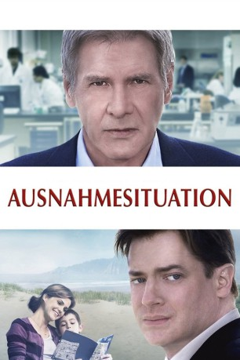

gesehen am 11.10.2016
gesehen am 11.10.2016Alternativ: Extraordinary Measures gesehen am 11.10.2016
 
 IMDB-Wertung: 6.5 / 10
IMDB-Wertung: 6.5 / 10  Metascore:
Metascore: 
Kaum sind die materiellen Sorgen aus der Welt, holt einen das Schicksal an anderer Stelle ein: Der erfolgreiche Geschäftsmann John Crowley (Brendan Fraser) muss schockiert erfahren, dass zwei seiner Sprösslinge an einer tödlichen Erbkrankheit leiden, gegen die es bisher kein adäquates Mittel gibt. Doch der Familienvater gibt nicht auf: Im Internet stößt er auf die Veröffentlichungen von Dr. Robert Stonehill (Harrison Ford), der auf Grundlage seiner theoretischen Arbeit ein wirksames Medikament in Aussicht stellt. Zuerst möchte der eigensinnige Mediziner nichts von einer Zusammenarbeit wissen. Erst als Crowley ihn mit seiner Frau Aileen (Keri Russell) und den erkrankten Kindern bekannt macht, beginnt der harte Kern des Wissenschaftlers zu schmelzen. Nun fehlen nur noch die benötigten finanziellen Mittel…
Jahr: 2010
Dauer: 105 Minuten
FSK:
Land: USA Studio: CBS FilmsTonspuren: DTS - ,
Untertitel: Deutsch,
Auflösung: 1080p (1920x1080) Größe: 7434 MB
Genre: Drama
Regisseur: Tom Vaughan
Drehbuch: Harry Grey
Soundtrack:
Darsteller:
 Brendan Fraser als John Crowley
Brendan Fraser als John Crowley Harrison Ford als Dr. Stonehill
Harrison Ford als Dr. Stonehill Keri Russell als Aileen Crowley
Keri Russell als Aileen Crowley Jared Harris als Dr. Kent Webber
Jared Harris als Dr. Kent Webber Patrick Bauchau als CEO Erich Loring
Patrick Bauchau als CEO Erich Loring Alan Ruck als Pete Sutphen
Alan Ruck als Pete Sutphen David Clennon als Dr. Renzler
David Clennon als Dr. Renzler Dee Wallace als Sal
Dee Wallace als Sal Courtney B. Vance als Marcus Temple
Courtney B. Vance als Marcus Temple Ayanna Berkshire als Wendy Temple
Ayanna Berkshire als Wendy Temple P.J. Byrne als Dr. Preston
P.J. Byrne als Dr. Preston Jeanine Jackson als Nell Madden
Jeanine Jackson als Nell Madden Robert Blanche als Armed Guard
Robert Blanche als Armed GuardDatei: X:\2010(A-F)\Ausnahmesituation (2010, FSK, 1920x1080).mkv seit 12.05.2016
Festplatte: HD 2009(G-Z)-2010(A-F)
 Es gibt insgesamt 95 Filme in der Gruppe '2010(A-F)'
Es gibt insgesamt 95 Filme in der Gruppe '2010(A-F)'